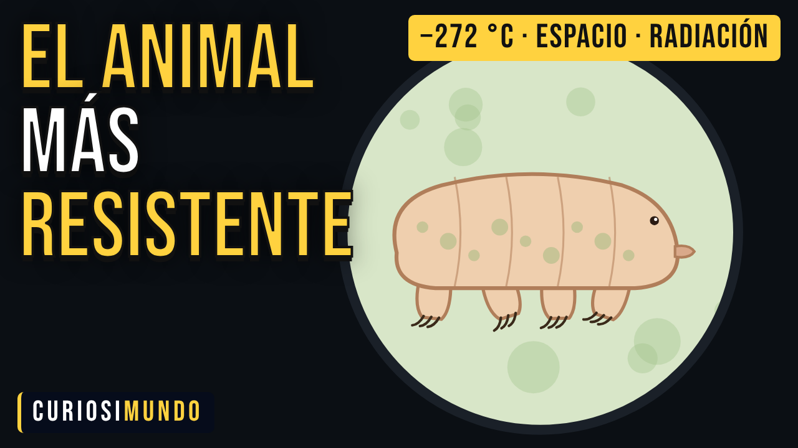

<!doctype html>
<!--
  CURIOSIMUNDO · 09 · El tardígrado, el animal más resistente (TikTok, 9:16, 46 s). Resumen del vídeo de YouTube.
  Datos: −272 °C (helio líquido), >95 % del agua fuera en el tonel, ~1.000 veces la radiación letal humana, FOTON-M3 2007
  (10 días; >68 % de los protegidos del UV revivieron), Beresheet 2019. "−272 °C" en el fotograma 0.
-->
<html data-width="1080" data-height="1920" data-fps="30" data-duration="46.4" data-safe-zone="reels">
<head><link rel="stylesheet" href="lib/cm.css"><script src="lib/cm.js"></script><script src="lib/td.js"></script>
<style>
  body { background: radial-gradient(1200px 1400px at 50% 40%, #1565C0, #0B2A5B 75%); }
  #band { position:absolute; left:0; top:560px; width:1920px; height:1080px; transform: scale(.5625); transform-origin: 0 0; overflow:hidden; z-index:2; }
  #frame { position:absolute; left:0; top:556px; width:1080px; height:616px; border-top:4px solid #FFD23F; border-bottom:4px solid #FFD23F; z-index:3; pointer-events:none; }
  .ttl { position:absolute; left:40px; right:40px; top:250px; height:290px; display:flex; align-items:center; justify-content:center; text-align:center; z-index:5;
         font: 400 118px/.92 'Bebas Neue'; text-shadow: 0 10px 40px rgb(0 0 0 / .6); opacity:0; }
  .ttl em { font-style:normal; color:#FFD23F; }
  #vcaps { position:absolute; inset:0; z-index:8; pointer-events:none; }
  .vc { position:absolute; left:50px; right:50px; top:1240px; text-align:center; isolation:isolate; font: 850 86px/1.1 Inter; letter-spacing:-.02em; }
  .vc .w { display:inline-block; padding:0 .14em; --hl:0; position:relative; color: color-mix(in oklab, #0B2A5B calc(var(--hl) * 100%), #fff);
           text-shadow: 0 5px 0 rgb(0 10 40 / calc(.7 - var(--hl) * .7)), 0 8px 30px rgb(0 0 0 / calc(.5 - var(--hl) * .5)); }
  .vc .pl { position:absolute; left:0; top:.02em; height:1.08em; border-radius:.22em; z-index:-1; background:#FFD23F; }
  #promo { z-index: 6; }
</style></head>
<body>
<audio src="voz.mp3"></audio>
<audio src="musica.mp3" data-volume="0.5" data-duck="0.45" data-fade-out="1"></audio>
<audio src="sfx.mp3" data-volume="0.6"></audio>
<section class="scene" id="s0" data-start="0" data-duration="5.5"></section>
<section class="scene" id="s1" data-start="5.4" data-duration="6.4"></section>
<section class="scene" id="s2" data-start="11.7" data-duration="5.7"></section>
<section class="scene" id="s3" data-start="17.3" data-duration="5.9"></section>
<section class="scene" id="s4" data-start="23.1" data-duration="8.4"></section>
<section class="scene" id="s5" data-start="31.4" data-duration="7.3"></section>
<section class="scene" id="promo" data-start="38.6" data-duration="7.8"></section>
<div id="titles"></div><div id="vcaps"></div>
<script>
gm.wait(fetch('voz.json').then(r => r.json()).then(words => {
  const W = CM.W(words, 0), G = { global: true }, tl = gm.timeline(null, G), $ = id => document.getElementById(id), mk = CM.mk;
  const sv = (id, bg) => { const s = mk('svg', { viewBox: '0 0 1080 1920', width: 1080, height: 1920, style: 'position:absolute;inset:0' }, $(id)); CM.defs(s); if (bg) $(id).style.background = bg; return s; };
  const stars = s => { for (let i = 0; i < 90; i++) mk('circle', { cx: gm.random('x' + i) * 1080, cy: gm.random('y' + i) * 1920, r: 1 + gm.random('r' + i) * 2.5, fill: '#fff', opacity: .3 + gm.random('o' + i) * .6 }, s); };
  const T = [[0, '<em>−272 °C</em><br>Y SOBREVIVE'], [5.5, 'EL <em>TARDÍGRADO</em>'], [7.6, '<em>8 PATAS</em><br>CON GARRAS'], [9.1, 'VIVE EN EL<br><em>MUSGO</em>'], [11.8, 'SE SECA…<br>COMO UN <em>BARRIL</em>'], [14.1, '<em>–95 %</em><br>DE AGUA'],
    [17.4, 'FRÍO · <em>VACÍO</em>'], [19.8, '<em>×1.000</em><br>RADIACIÓN'], [23.2, '2007: ESPACIO<br><em>SIN TRAJE</em>'], [26.2, '<em>10 DÍAS</em><br>DESPUÉS…'], [29.4, '¡<em>REVIVIERON</em>!'], [31.5, '2019:<br><em>LA LUNA</em>'], [36.0, 'SIGUEN <em>ALLÍ</em>'], [38.7, '']];
  T.forEach(([at, html], i) => { const h = Object.assign(document.createElement('div'), { className: 'ttl', innerHTML: '<div>' + html + '</div>' }); $('titles').append(h); if (!html) return;
    const end = T[i + 1] ? T[i + 1][0] : 99;
    if (at === 0) { h.style.opacity = 1; tl.fromTo(h, { scale: 1.15 }, { scale: 1, duration: .5, ease: 'expo.out' }, 0); }
    else tl.fromTo(h, { opacity: 0, y: 90, scale: 1.2, filter: 'blur(10px)' }, { opacity: 1, y: 0, scale: 1, filter: 'blur(0px)', duration: .3, ease: 'expo.out' }, at);
    tl.to(h, { opacity: 0, y: -80, duration: .18, ease: 'power2.in' }, end - .18); });
  const bearIn = (s, x, y, sc, dir = 1) => { const w = mk('g', {}, s), b = TD.bear(w); b.g.setAttribute('transform', `translate(${x} ${y}) scale(${sc * dir} ${sc})`); return { w, b }; };
  /* s0: microscope + frost */
  const z0 = sv('s0', '#0b0f14'); const in0 = TD.scope(z0, 540, 1000, 420, '#cfe6f2'); const b0 = bearIn(in0, 540, 1160, .85); gm.onFrame($('s0'), (l, i) => b0.b.setWalk(i.time, .8));
  const mm = CM.text($('s0'), 'big', 'MIDE <em>&lt; 1 MM</em>', 1450, 'font-size:100px'); tl.from(mm, { opacity: 0, scale: 1.4, duration: .3 }, .2).to(mm, { opacity: 0, duration: .2 }, 1.8);
  /* s1: big bear on moss */
  const z1 = sv('s1', 'linear-gradient(#9cc4e6, #e8efe0)'); TD.moss(z1, 540, 1950, 5, 26); const b1 = bearIn(z1, 300, 1150, 1.1); gm.onFrame($('s1'), (l, i) => { b1.b.setWalk(i.time, 1); b1.b.g.setAttribute('transform', `translate(${300 + (i.time - 5.4) * 50} 1150) scale(1.1)`); });
  /* s2: dry -> tun, water gauge */
  const z2 = sv('s2', 'linear-gradient(#e8c48a, #c9a46a)'); TD.moss(z2, 540, 1950, 5, 26); const bw = mk('g', {}, z2), tw = mk('g', {}, z2); const b2 = TD.bear(bw); b2.g.setAttribute('transform', 'translate(520 1100) scale(1.1)'); const t2 = TD.tun(tw); t2.setAttribute('transform', 'translate(540 1100) scale(1.2)');
  tl.to(bw, { opacity: 0, duration: .5 }, W('encoge') - .3).from(tw, { opacity: 0, duration: .5 }, W('encoge') - .3);
  const tank = mk('rect', { x: 880, y: 560, width: 120, height: 420, rx: 20, fill: 'none', stroke: '#fff', 'stroke-width': 8 }, z2), wat = mk('rect', { x: 888, y: 568, width: 104, height: 404, rx: 14, fill: '#3f86b4' }, z2);
  tl.to(wat, { attr: { y: 950, height: 22 }, duration: 1.5 }, W('pierde') - .2);
  /* s3: cold / vacuum / radiation */
  const z3 = sv('s3', 'linear-gradient(#0e2a4a, #2a1a4a)'); stars(z3); const t3 = mk('g', {}, z3); const tun3 = TD.tun(t3); tun3.setAttribute('transform', 'translate(540 1150) scale(1.2)');
  const rays = mk('g', { opacity: 0 }, z3); for (let i = 0; i < 9; i++) mk('line', { x1: 1080, y1: 200 + i * 60, x2: 640, y2: 1000 + i * 10, stroke: '#b06aff', 'stroke-width': 8, opacity: .6 }, rays); tl.to(rays, { opacity: 1, duration: .4 }, W('radiación') - .5);
  const frost = mk('g', { opacity: 0 }, z3); for (let i = 0; i < 20; i++) mk('path', { d: `M${gm.random('fx' + i) * 1080} ${gm.random('fy' + i) * 1920} l20 0 m-10 -10 l0 20`, stroke: '#cfe6ff', 'stroke-width': 4 }, frost); tl.to(frost, { opacity: 1, duration: .3 }, W('frío') - .2);
  /* s4: space + revival */
  const z4 = sv('s4', '#030817'); stars(z4); mk('circle', { cx: 540, cy: 2500, r: 1100, fill: '#1e6fd0' }, z4); const cap = mk('g', {}, z4); mk('circle', { r: 110, fill: '#c9cdd4', stroke: '#7d838c', 'stroke-width': 8 }, cap); mk('rect', { x: -300, y: -28, width: 180, height: 56, fill: '#2f4f9a' }, cap); mk('rect', { x: 120, y: -28, width: 180, height: 56, fill: '#2f4f9a' }, cap);
  gm.onFrame($('s4'), (l, i) => cap.setAttribute('transform', `translate(${200 + (i.time - 23.1) * 60} ${900 + Math.sin(i.time) * 30}) rotate(${(i.time - 23.1) * 4})`));
  const dish = mk('g', { opacity: 0 }, z4); mk('ellipse', { cx: 540, cy: 900, rx: 420, ry: 140, fill: 'rgb(150 200 255 / .3)', stroke: '#9fb3c8', 'stroke-width': 8 }, dish); const rb = [0, 1, 2].map(i => bearIn(dish, 330 + i * 210, 940, .35, i % 2 ? -1 : 1));
  tl.to(cap, { opacity: 0, duration: .3 }, 29.0).to(dish, { opacity: 1, duration: .4 }, 29.1); gm.onFrame($('s4'), (l, i) => rb.forEach(o => o.b.setWalk(i.time, 1)));
  /* s5: moon */
  const z5 = sv('s5', '#030817'); stars(z5); mk('path', { d: 'M0 1300 Q540 1240 1080 1300 L1080 1920 L0 1920Z', fill: '#9a9a92' }, z5); mk('circle', { cx: 860, cy: 640, r: 100, fill: '#1e6fd0' }, z5);
  const lan = mk('g', {}, z5); mk('path', { d: 'M-50 -30 L50 -30 L60 20 L-60 20Z', fill: '#d8dde6' }, lan); [-50, 50].forEach(x => mk('path', { d: `M${x} 20 L${x * 1.5} 60`, stroke: '#d8dde6', 'stroke-width': 6 }, lan));
  const dust = mk('ellipse', { cx: 600, cy: 1300, rx: 0, ry: 0, fill: '#c9c9c0' }, z5); const tH = W('estrellaron') - .1;
  gm.onFrame($('s5'), (l, i) => { const t = i.time, k = gm.clamp((t - 31.4) / (tH - 31.4)); lan.setAttribute('transform', `translate(${300 + k * 300} ${500 + k * k * 800}) rotate(${k * 40}) scale(1.6)`); lan.style.display = t < tH ? '' : 'none'; const d = gm.clamp((t - tH) / 1.2); dust.setAttribute('rx', d * 300); dust.setAttribute('ry', d * 80); dust.setAttribute('opacity', 1 - d * .6); });
  const tuns = mk('g', { opacity: 0 }, z5); for (let i = 0; i < 6; i++) { const g = mk('g', {}, tuns); const t = TD.tun(g); t.setAttribute('transform', `translate(${180 + i * 150} ${1450 + (i % 2) * 60}) scale(.3)`); } tl.to(tuns, { opacity: 1, duration: .5 }, W('siguen') - .3);
  /* promo */
  const pr = $('promo'); pr.style.background = 'radial-gradient(1200px 1400px at 50% 40%, #2f6a3a, #071a10 75%)';
  pr.innerHTML = `<div style="position:absolute;left:0;right:0;top:250px;text-align:center;font:400 104px/.95 'Bebas Neue'">LA HISTORIA COMPLETA<br>EN <span style="color:#FFD23F">YOUTUBE</span></div>
    <div id="card" style="position:absolute;left:90px;width:900px;top:520px;height:506px;border-radius:26px;overflow:hidden;box-shadow:0 30px 80px rgb(0 0 0 / .6);border:6px solid #fff">
      <div style="position:absolute;left:50%;top:50%;width:170px;height:120px;margin:-60px 0 0 -85px;background:#E5484D;border-radius:30px"></div>
      <div style="position:absolute;left:50%;top:50%;margin:-32px 0 0 -18px;border-left:62px solid #fff;border-top:34px solid transparent;border-bottom:34px solid transparent"></div></div>`;
  tl.from(pr, { opacity: 0, duration: .3 }, 38.6).from(pr.children[0], { y: 60, opacity: 0, duration: .4, ease: 'expo.out' }, 38.7).from('#card', { scale: .6, opacity: 0, duration: .5, ease: 'back.out(1.6)' }, 38.9)
    .to('#card', { scale: 1.04, duration: .5, ease: 'sine.inOut', yoyo: true, repeat: 7 }, 39.6);
  ['s1', 's2', 's3', 's4', 's5'].forEach(id => tl.from($(id), { opacity: 0, duration: .2 }, +$(id).dataset.start));
  /* vertical captions */
  const ws = words.map(w => ({ text: w.word, start: w.start, end: w.end })), ph = [[]];
  ws.forEach((w, i) => { const cur = ph.at(-1), prev = ws[i - 1];
    if (cur.length && (cur.length === 3 || cur.map(x => x.text).join(' ').length + w.text.length > 16 || w.start - prev.end > .28 || /[.!?,:…]$/.test(prev.text) || /^¿/.test(w.text))) ph.push([]);
    ph.at(-1).push(w); });
  const ct = gm.timeline(null, G), els = ph.map(p => { const el = document.createElement('div'); el.className = 'vc'; el.innerHTML = '<i class="pl"></i>' + p.map(w => `<span class="w">${w.text}</span>`).join(' '); $('vcaps').append(el); return el; });
  return document.fonts.ready.then(() => ph.forEach((p, k) => {
    const el = els[k], sp = el.querySelectorAll('.w'), pl = el.querySelector('.pl'), nx = ph[k + 1], bx = i => ({ x: sp[i].offsetLeft, width: sp[i].offsetWidth });
    ct.fromTo(pl, { ...bx(0), scale: .5, opacity: 0 }, { scale: 1, opacity: 1, duration: .16, ease: 'back.out(2)' }, p[0].start - .04);
    p.forEach((w, i) => { ct.fromTo(sp[i], { opacity: 0, y: 40, scale: .6 }, { opacity: 1, y: 0, scale: 1, duration: .22, ease: 'back.out(2.4)' }, w.start - .06);
      if (i) ct.to(pl, { ...bx(i), duration: .1, ease: 'power3.out' }, w.start - .08);
      ct.to(sp[i], { '--hl': 1, duration: .05 }, w.start - .03).to(sp[i], { '--hl': 0, duration: .05 }, p[i + 1] ? p[i + 1].start - .08 : Math.min(w.end + .3, nx ? nx[0].start - .2 : 99)); });
    ct.to(el, { opacity: 0, duration: .12 }, nx ? nx[0].start - .18 : p.at(-1).end + .7);
  }));
}));
</script>
</body>
</html>
